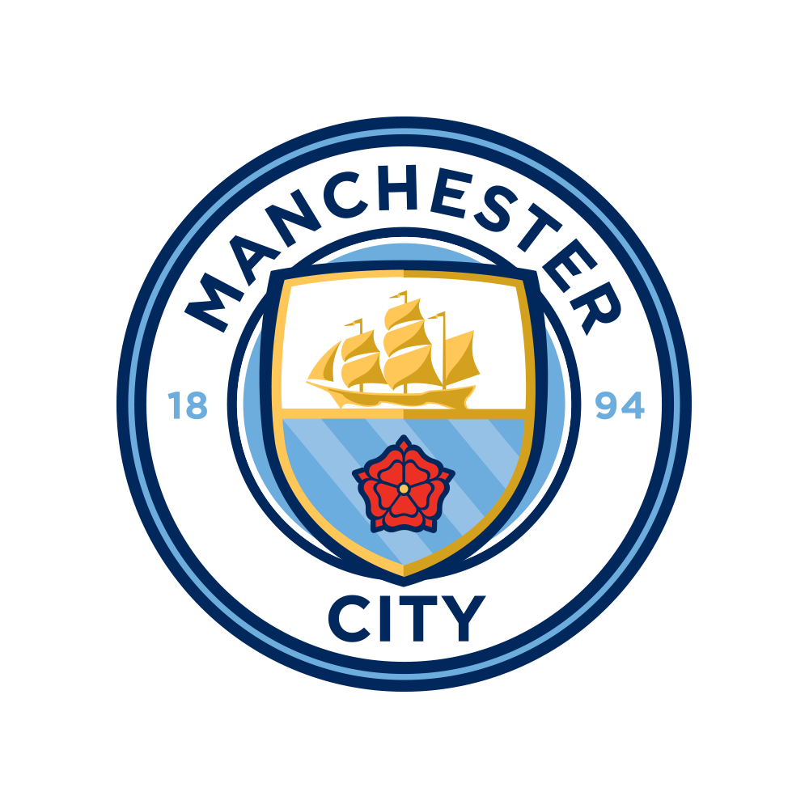
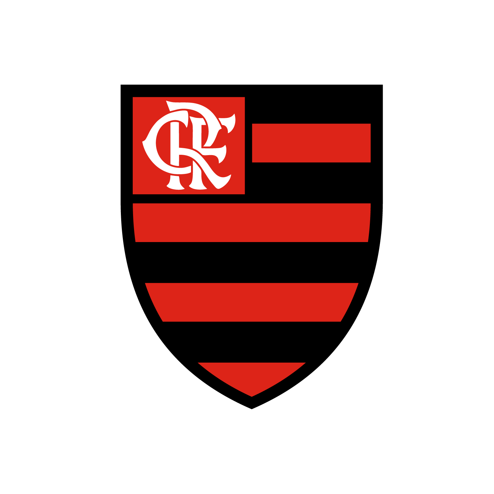
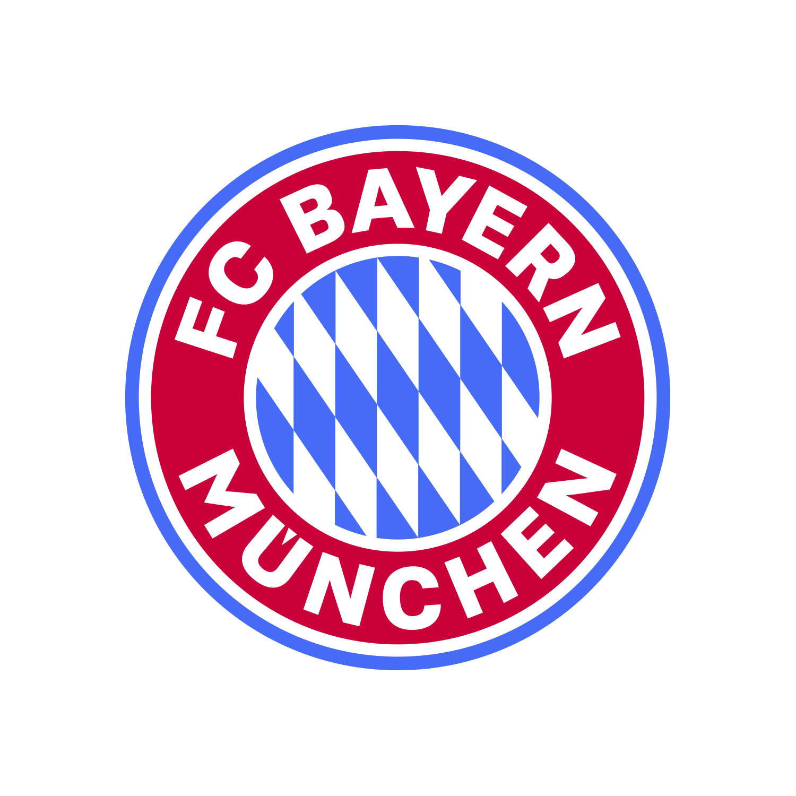

O mundo da bola
em um só lugar.
Ligas, clubes, escudos, estádios e escalações das principais competições do planeta — organizado como um verdadeiro caderno de scouting, do Brasileirão à Champions League.
Feito para quem vive o jogo entre uma partida e outra.
O FOOTBALL SOCCER nasceu para organizar o que hoje está espalhado: tabelas, escudos, história dos clubes e escalações. Tudo com a estética de um estádio nos minutos que antecedem o apito inicial.
Principais ligas do futebol mundial
Premier League
A liga mais assistida do planeta, marcada por ritmo intenso e estádios lotados.
Ver clubesLa Liga
Berço do El Clásico, com tradição técnica e alguns dos maiores clubes da história.
Ver clubesSerie A
O berço do "catenaccio" e de rivalidades históricas como o Derby d'Italia.
Ver clubesBundesliga
Estádios sempre cheios e um dos futebóis mais organizados taticamente do mundo.
Ver clubesLigue 1
Vitrine para joias do futebol mundial, com o PSG como principal força.
Ver clubesBrasileirão Série A
A liga mais competitiva das Américas, com a maior torcida do mundo por trás dela.
Ver clubesUEFA Champions League
A competição de clubes mais cobiçada do mundo — a "orelhuda" define o melhor da Europa.
Ver clubesEquipes em destaque

Real Madrid
O clube com mais títulos europeus da história.
Ver perfil
Manchester City
Potência tática comandada com identidade própria de jogo.
Ver perfil
Flamengo
A maior torcida do Brasil, com o Maracanã como palco de festa.
Ver perfil
Bayern de Munique
Dominante na Alemanha e presença constante na elite europeia.
Ver perfilO hino que arrepia antes da bola rolar
O hino oficial da UEFA Champions League, tocado em todos os estádios antes das partidas da fase de grupos ao mata-mata.
Você sabia?
O Maracanã já recebeu mais de 170 mil pessoas
Na final da Copa do Mundo de 1950, o estádio carioca teve um dos maiores públicos já registrados em um jogo de futebol.
O El Clásico é disputado desde 1902
Real Madrid e Barcelona já se enfrentaram centenas de vezes, num dos maiores clássicos do esporte mundial.
A "orelhuda" tem esse apelido pelo formato
O troféu da Champions League é chamado assim por causa de suas duas grandes alças, uma de cada lado.